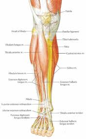
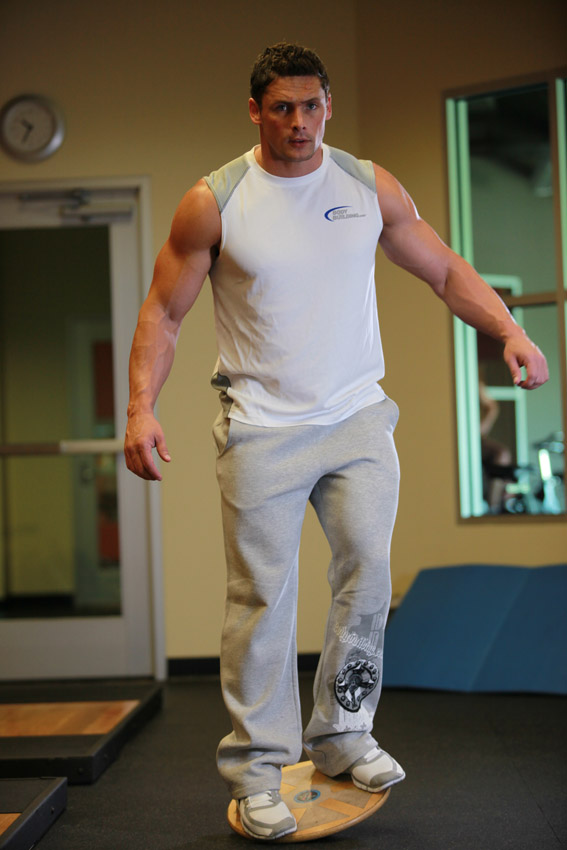
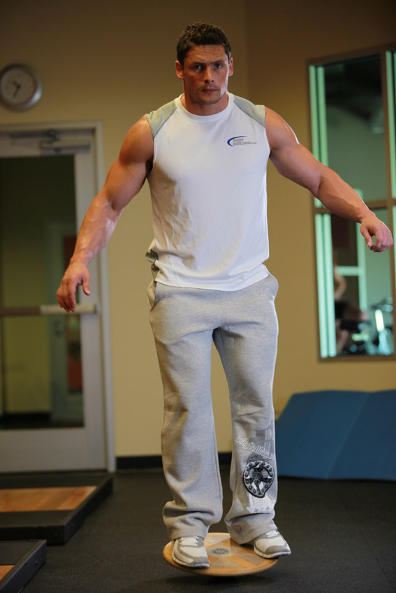
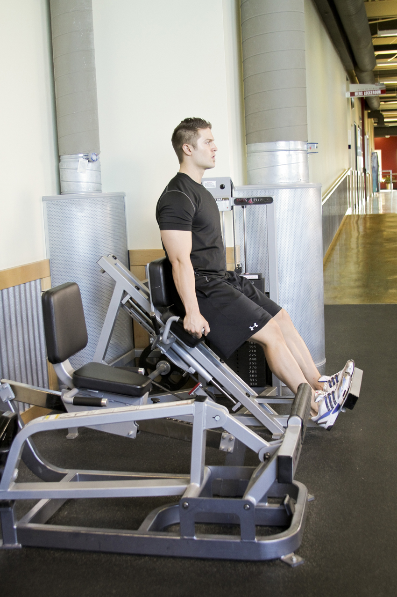
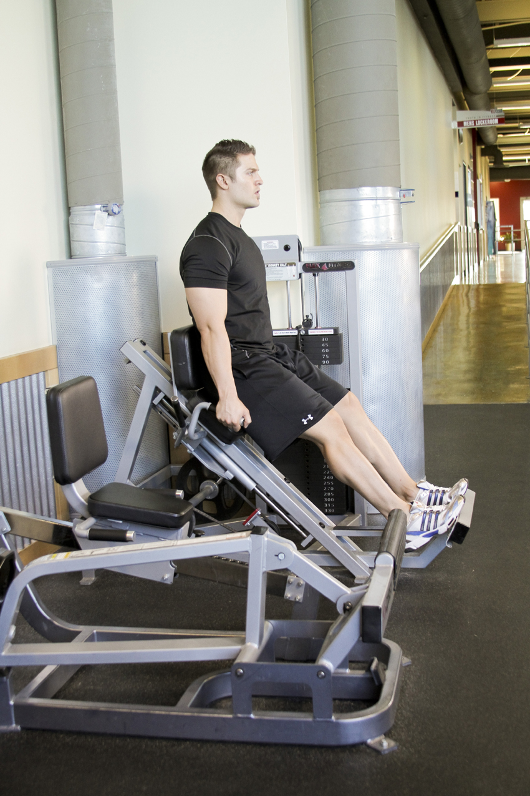
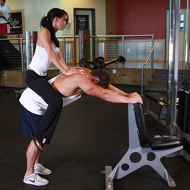
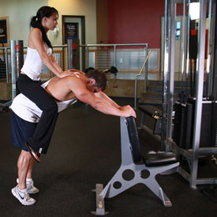
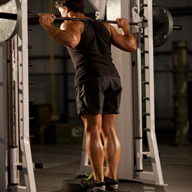
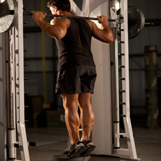

<!DOCTYPE html PUBLIC "-//W3C//DTD XHTML 1.0 Strict//EN" "http://www.w3.org/TR/xhtml1/DTD/xhtml1-strict.dtd">
<!--
Design by Free CSS Templates
http://www.freecsstemplates.org
Released for free under a Creative Commons Attribution 2.5 License

Name       : Open-Air
Description: A two-column, fixed-width design with dark color scheme.
Version    : 1.0
Released   : 20120818

-->
<html xmlns="http://www.w3.org/1999/xhtml"/>
<?php
session_start();
include('mygymdbConnect.php');
include('SignUp.php');
?>
<html>
    <head>
        <title> MyGym</title>
        <div style="position :absolute;top:20px;left:40px">
            <p><h2>MY<br/> 
                    GYM 
                    <br/></h2></p></div>
        <div style="position: absolute ;left:  200px; top: 20px;"> </div>
        <div style="position:absolute;top:37%;left:35%"/>
        <link href="http://fonts.googleapis.com/css?family=Oswald:400,300" rel="stylesheet" type="text/css" />         

        <link href="style.css" rel="stylesheet" type="text/css" media="screen" />
        <a href="home.php" style="text-decoration: none;color: black;font:serif;font-weight: bold;  ">Home |</a>
        <a href="About.html" style="text-decoration: none;color: black;font:serif;font-weight: bold;  ">About |</a>
        <a href="sign up.html" style="text-decoration: none;color: black;font:serif;font-weight: bold;  ">Sign up |</a>
        <a href="Activities.html" style="text-decoration: none;color: black;font:serif;font-weight: bold;  ">Activities |</a>
        <a href="Trainers.html" style="text-decoration: none;color: black;font:serif;font-weight: bold;  ">Trainers |</a>
        <a href="classes.html" style="text-decoration: none;color: black;font:serif;font-weight: bold;  ">Classes |</a>
        <a href="Training.html" style="text-decoration: none;color: black;font:serif;font-weight: bold;  ">Train |</a>   

    </head>

    <body>
        <div style="position: absolute;left: -300px">
            <table  cellpadding="10" cellspacing="10" height="400px" width="1200px">
                <tr><td></img>
                    </td>
                    <td><b>Description</b><br></br>In human anatomy, the calf (also calf of the leg) is the back portion of the lower leg (the crus). In terms of muscle systems, the calf corresponds to the posterior compartment of the leg. Within the posterior compartment, the two largest muscles are known together as the calf muscle and attach to the heel via the Achilles tendon. Several other, smaller muscles attach to the knee, the ankle, and via long tendons to the toes 
                    </td>
                </tr>
            </table>
        </div>
        <div style="position: absolute;left: -200px;top: 500px" >
            <table border="2"  cellpadding="10" cellspacing="10" align="center">
                <tr><td><b>EXERCISES</b></td></tr>
                <tr><td></img></br>
                        </img></td>
                    <td><b>Balance Board</b>
                        </br> 1-Place a balance board in front of you.
                        </br> 2-Stand up on it and try to balance yourself.
                        </br> 3-Hold the balance for as long as desired.
                        </br> Caution: If your balance is poor, start out with one of the less challenging boards.
                        </br>Variations: You can perform this exercise using various types of balance boards. Some are more challenging than others.
                    </td>
                </tr>
                <tr><td></img></br>
                        </img></td>
                    <td><b>Calf Press</b>
                        </br>1-Adjust the seat so that your legs are only slightly bent in the start position. The balls of your feet should be firmly on the platform.
                        </br>2-Select an appropriate weight, and grasp the handles. This will be your starting position.
                        </br>3-Straighten the legs by extending the knees, just barely lifting the weight from the stack. Your ankle should be fully flexed, toes pointing up. Execute the movement by pressing downward through the balls of your feet as far as possible.
                        </br>4-After a brief pause, reverse the motion and repeat.
                    </td>
                </tr>
                <tr><td></img></br>
                        </img></td>
                    <td><b>Donkey Calf Raises</b>
                        </br>1-For this exercise you will need access to a donkey calf raise machine. Start by positioning your lower back and hips under the padded lever provided. The tailbone area should be the one making contact with the pad.
                        </br>2-Place both of your arms on the side handles and place the balls of your feet on the calf block with the heels extending off. Align the toes forward, inward or outward, depending on the area you wish to target, and straighten the knees without locking them. This will be your starting position.
                        </br>3-Raise your heels as you breathe out by extending your ankles as high as possible and flexing your calf. Ensure that the knee is kept stationary at all times. There should be no bending at any time. Hold the contracted position by a second before you start to go back down.
                        </br>4-Go back slowly to the starting position as you breathe in by lowering your heels as you bend the ankles until calves are stretched.
                        </br>5-Repeat for the recommended amount of repetitions.
                    </td>
                </tr>
                <tr><td></img><br></br>
                        </img>  </td>
                    <td><b>Smith Machine Calf Raise</b>
                        </br>1-Place a block or weight plate below the bar on the Smith machine. Set the bar to a position that best matches your height. Once the correct height is chosen and the bar is loaded, step onto the plates with the balls of your feet and place the bar on the back of your shoulders.
                        </br>2-Take the bar with both hands facing forward. Rotate the bar to unrack it. This will be your starting position.
                        </br>3-Raise your heels as high as possible by pushing off of the balls of your feet, flexing your calf at the top of the contraction. Your knees should remain extended. Hold the contracted position for a second before you start to go back down.
                        </br>4-Return slowly to the starting position as you breathe in while lowering your heels.
                        </br>5-Repeat for the recommended amount of repetitions.
                    </td>
                </tr>
            </table>
        </div>
    </body>
</html>